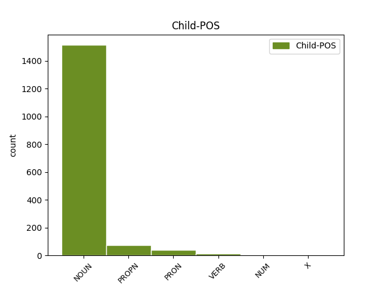

Distribution of features within this leaf

Agreement Rules sorted by frequency.
- When the dependent token is the appositional modifier(appos) of the head token, and the dependent token is NOUN.
1 Talvan _ _ _ _ 0 _ _ _
2 niðanfyri _ _ _ _ 0 _ _ _
3 vísir _ _ _ _ 0 _ _ _
4 broytingarnar _ _ _ _ 0 _ _ _
5 í _ _ _ _ 0 _ _ _
6 fólkatalinum _ _ _ _ 0 _ _ _
7 , _ _ _ _ 0 _ _ _
8 býtt _ _ _ _ 0 _ _ _
9 á _ _ _ _ 0 _ _ _
10 økir _ _ _ _ 0 _ _ _
11 , _ _ _ _ 0 _ _ _
12 fyrstu _ _ _ _ 0 _ _ _
13 nýggju nýggjus NOUN _ Case=Acc|Gender=Masc|Number=Sing 0 _ _ _
14 mánaðirnar mánaðirnar NOUN _ Case=Acc|Gender=Masc|Number=Sing 13 appos _ _
15 í _ _ _ _ 0 _ _ _
16 ár _ _ _ _ 0 _ _ _
17 . _ _ _ _ 0 _ _ _
1 Formaður _ _ _ _ 0 _ _ _
2 í _ _ _ _ 0 _ _ _
3 tingbólki _ _ _ _ 0 _ _ _
4 sambandsfloksins _ _ _ _ 0 _ _ _
5 og _ _ _ _ 0 _ _ _
6 formaður formaður NOUN _ Case=Nom|Gender=Masc|Number=Sing 0 _ _ _
7 vinnunevndini _ _ _ _ 0 _ _ _
8 , _ _ _ _ 0 _ _ _
9 Alfred Alfred PROPN _ Case=Nom|Gender=Masc|Number=Sing|Shared=Yes 6 appos _ _
10 Olsen _ _ _ _ 0 _ _ _
11 , _ _ _ _ 0 _ _ _
12 tekur _ _ _ _ 0 _ _ _
13 undir _ _ _ _ 0 _ _ _
14 við _ _ _ _ 0 _ _ _
15 ætlanini _ _ _ _ 0 _ _ _
16 hjá _ _ _ _ 0 _ _ _
17 landsstýrismanninum _ _ _ _ 0 _ _ _
18 í _ _ _ _ 0 _ _ _
19 fiskivinnumálum _ _ _ _ 0 _ _ _
20 . _ _ _ _ 0 _ _ _
1 Tí _ _ _ _ 0 _ _ _
2 fellur _ _ _ _ 0 _ _ _
3 prísurin _ _ _ _ 0 _ _ _
4 eisini _ _ _ _ 0 _ _ _
5 á _ _ _ _ 0 _ _ _
6 fiskasløgum _ _ _ _ 0 _ _ _
7 sum sum PRON _ Case=Nom|Gender=Neut|Number=Sing 0 _ _ _
8 longu _ _ _ _ 0 _ _ _
9 og _ _ _ _ 0 _ _ _
10 brosmu _ _ _ _ 0 _ _ _
11 , _ _ _ _ 0 _ _ _
12 sum sums PRON _ Case=Nom|Gender=Neut|Number=Sing 7 appos _ _
13 áttu _ _ _ _ 0 _ _ _
14 at _ _ _ _ 0 _ _ _
15 komið _ _ _ _ 0 _ _ _
16 í _ _ _ _ 0 _ _ _
17 staðin _ _ _ _ 0 _ _ _
18 fyri _ _ _ _ 0 _ _ _
19 toskin _ _ _ _ 0 _ _ _
20 . _ _ _ _ 0 _ _ _
1 Haldi _ _ _ _ 0 _ _ _
2 annar _ _ _ _ 0 _ _ _
3 , _ _ _ _ 0 _ _ _
4 at _ _ _ _ 0 _ _ _
5 allir _ _ _ _ 0 _ _ _
6 undirsjóvatunnlarnir _ _ _ _ 0 _ _ _
7 áttu _ _ _ _ 0 _ _ _
8 at _ _ _ _ 0 _ _ _
9 ligið _ _ _ _ 0 _ _ _
10 í _ _ _ _ 0 _ _ _
11 sama _ _ _ _ 0 _ _ _
12 felag felags NOUN _ Case=Acc|Gender=Masc|Number=Sing 0 _ _ _
13 - _ _ _ _ 0 _ _ _
14 eisini _ _ _ _ 0 _ _ _
15 teir teir VERB _ Case=Acc|Gender=Masc|Number=Sing 12 appos _ _
16 komandi _ _ _ _ 0 _ _ _
17 . _ _ _ _ 0 _ _ _
1 Undantak _ _ _ _ 0 _ _ _
2 kann _ _ _ _ 0 _ _ _
3 verða _ _ _ _ 0 _ _ _
4 givið _ _ _ _ 0 _ _ _
5 í _ _ _ _ 0 _ _ _
6 eitt _ _ _ _ 0 _ _ _
7 ella _ _ _ _ 0 _ _ _
8 fleiri _ _ _ _ 0 _ _ _
9 tíðarskeið tíðarskeið NOUN _ Case=Acc|Gender=Neut|Number=Sing 0 _ _ _
10 , _ _ _ _ 0 _ _ _
11 tó tó NUM _ Case=Acc|Gender=Neut|Number=Sing 9 appos _ _
12 í _ _ _ _ 0 _ _ _
13 mesta _ _ _ _ 0 _ _ _
14 lagi _ _ _ _ 0 _ _ _
15 60 _ _ _ _ 0 _ _ _
16 mánaðir _ _ _ _ 0 _ _ _
17 samanlagt _ _ _ _ 0 _ _ _
18 . _ _ _ _ 0 _ _ _
Disagree Examples:
1 Op.1,7 _ _ _ _ 0 _ _ _
2 - _ _ _ _ 0 _ _ _
3 Hann _ _ _ _ 0 _ _ _
4 kemur _ _ _ _ 0 _ _ _
5 við _ _ _ _ 0 _ _ _
6 skýggjunum _ _ _ _ 0 _ _ _
7 , _ _ _ _ 0 _ _ _
8 og _ _ _ _ 0 _ _ _
9 hvørt _ _ _ _ 0 _ _ _
10 eyga _ _ _ _ 0 _ _ _
11 skal _ _ _ _ 0 _ _ _
12 síggja _ _ _ _ 0 _ _ _
13 Hann Hann PROPN _ Case=Nom|Gender=Fem|Number=Sing 0 _ _ _
14 , _ _ _ _ 0 _ _ _
15 eisini _ _ _ _ 0 _ _ _
16 teir teir NOUN _ Case=Acc|Gender=Neut|Number=Sing 13 appos _ _
17 , _ _ _ _ 0 _ _ _
18 sum _ _ _ _ 0 _ _ _
19 hava _ _ _ _ 0 _ _ _
20 stungið _ _ _ _ 0 _ _ _
21 Hann _ _ _ _ 0 _ _ _
22 ; _ _ _ _ 0 _ _ _
23 og _ _ _ _ 0 _ _ _
24 allar _ _ _ _ 0 _ _ _
25 ættir _ _ _ _ 0 _ _ _
26 jarðarinnar _ _ _ _ 0 _ _ _
27 skulu _ _ _ _ 0 _ _ _
28 gráta _ _ _ _ 0 _ _ _
29 sárt _ _ _ _ 0 _ _ _
30 yvir _ _ _ _ 0 _ _ _
31 Honum _ _ _ _ 0 _ _ _
32 . _ _ _ _ 0 _ _ _
1 Mon _ _ _ _ 0 _ _ _
2 , _ _ _ _ 0 _ _ _
3 31 _ _ _ _ 0 _ _ _
4 Mar _ _ _ _ 0 _ _ _
5 2014 _ _ _ _ 0 _ _ _
6 14:21:20 _ _ _ _ 0 _ _ _
7 BST _ _ _ _ 0 _ _ _
8 av _ _ _ _ 0 _ _ _
9 Vagn _ _ _ _ 0 _ _ _
10 , _ _ _ _ 0 _ _ _
11 82003 _ _ _ _ 0 _ _ _
12 ferðir _ _ _ _ 0 _ _ _
13 sætt _ _ _ _ 0 _ _ _
14 Hesa _ _ _ _ 0 _ _ _
15 vikuna _ _ _ _ 0 _ _ _
16 førir _ _ _ _ 0 _ _ _
17 10 _ _ _ _ 0 _ _ _
18 . _ _ _ _ 0 _ _ _
19 flokkur _ _ _ _ 0 _ _ _
20 fram _ _ _ _ 0 _ _ _
21 stuttliga _ _ _ _ 0 _ _ _
22 og _ _ _ _ 0 _ _ _
23 spennandi _ _ _ _ 0 _ _ _
24 sangleikin sangleiki NOUN _ Definite=Ind|Gender=Fem|Number=Sing 0 _ _ _
25 : _ _ _ _ 0 _ _ _
26 Prinsessan prinsessa NOUN _ Definite=Def|Gender=Masc|Number=Sing 24 appos _ _
27 , _ _ _ _ 0 _ _ _
28 ið _ _ _ _ 0 _ _ _
29 einki _ _ _ _ 0 _ _ _
30 mintist _ _ _ _ 0 _ _ _
31 . _ _ _ _ 0 _ _ _
1 Føroyski _ _ _ _ 0 _ _ _
2 venjarin _ _ _ _ 0 _ _ _
3 Kristian _ _ _ _ 0 _ _ _
4 Mikkelsen _ _ _ _ 0 _ _ _
5 hevur _ _ _ _ 0 _ _ _
6 almannakunngjørt _ _ _ _ 0 _ _ _
7 byrjunar byrjun NOUN _ Definite=Ind|Gender=Masc|Number=Plur 0 _ _ _
8 - _ _ _ _ 0 _ _ _
9 uppstillingina uppstillingin NOUN _ Definite=Def|Gender=Fem|Number=Sing 7 appos _ _
10 hjá _ _ _ _ 0 _ _ _
11 føroyska _ _ _ _ 0 _ _ _
12 liðnum _ _ _ _ 0 _ _ _
13 móti _ _ _ _ 0 _ _ _
14 Liktinstein _ _ _ _ 0 _ _ _
15 . _ _ _ _ 0 _ _ _
1 At _ _ _ _ 0 _ _ _
2 halda _ _ _ _ 0 _ _ _
3 , _ _ _ _ 0 _ _ _
4 kann _ _ _ _ 0 _ _ _
5 verða _ _ _ _ 0 _ _ _
6 sektað _ _ _ _ 0 _ _ _
7 við _ _ _ _ 0 _ _ _
8 beinleiðis _ _ _ _ 0 _ _ _
9 frísparki _ _ _ _ 0 _ _ _
10 , _ _ _ _ 0 _ _ _
11 men _ _ _ _ 0 _ _ _
12 grov _ _ _ _ 0 _ _ _
13 misbrot _ _ _ _ 0 _ _ _
14 , _ _ _ _ 0 _ _ _
15 har _ _ _ _ 0 _ _ _
16 leikari _ _ _ _ 0 _ _ _
17 heldur _ _ _ _ 0 _ _ _
18 í _ _ _ _ 0 _ _ _
19 mótleikara _ _ _ _ 0 _ _ _
20 , _ _ _ _ 0 _ _ _
21 skulu _ _ _ _ 0 _ _ _
22 harafturat _ _ _ _ 0 _ _ _
23 revsast _ _ _ _ 0 _ _ _
24 við _ _ _ _ 0 _ _ _
25 ávaring ávaring NOUN _ Case=Acc|Gender=Fem|Number=Sing 0 _ _ _
26 ( _ _ _ _ 0 _ _ _
27 gult _ _ _ _ 0 _ _ _
28 kort kort NOUN _ Case=Acc|Gender=Neut|Number=Sing 25 appos _ _
29 ) _ _ _ _ 0 _ _ _
30 . _ _ _ _ 0 _ _ _
1 Tað _ _ _ _ 0 _ _ _
2 eru _ _ _ _ 0 _ _ _
3 tvey _ _ _ _ 0 _ _ _
4 ting _ _ _ _ 0 _ _ _
5 , _ _ _ _ 0 _ _ _
6 sum _ _ _ _ 0 _ _ _
7 gera _ _ _ _ 0 _ _ _
8 , _ _ _ _ 0 _ _ _
9 at _ _ _ _ 0 _ _ _
10 eg _ _ _ _ 0 _ _ _
11 ikki _ _ _ _ 0 _ _ _
12 detti _ _ _ _ 0 _ _ _
13 sundur _ _ _ _ 0 _ _ _
14 , _ _ _ _ 0 _ _ _
15 tað _ _ _ _ 0 _ _ _
16 eru _ _ _ _ 0 _ _ _
17 sigarettir _ _ _ _ 0 _ _ _
18 og _ _ _ _ 0 _ _ _
19 sjálvandi _ _ _ _ 0 _ _ _
20 tað _ _ _ _ 0 _ _ _
21 besta besta ADJ _ Case=Dat|Gender=Masc,Neut|Number=Sing 0 _ _ _
22 , _ _ _ _ 0 _ _ _
23 vinirnir vinirni NOUN _ Case=Dat|Gender=Fem|Number=Sing 21 appos _ _
24 . _ _ _ _ 0 _ _ _